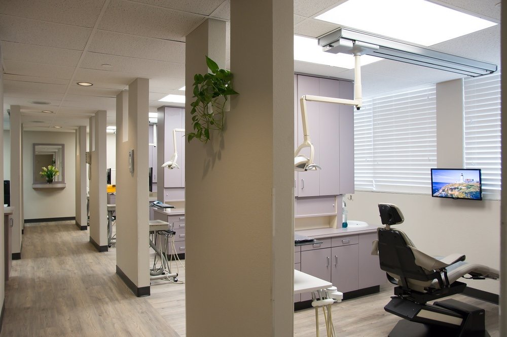
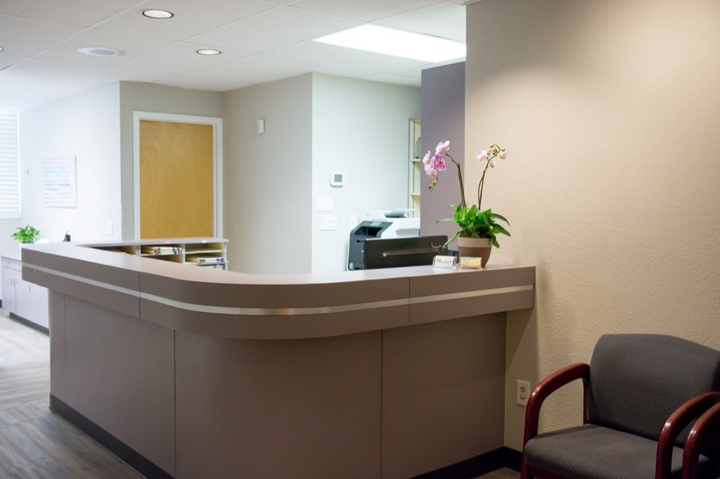
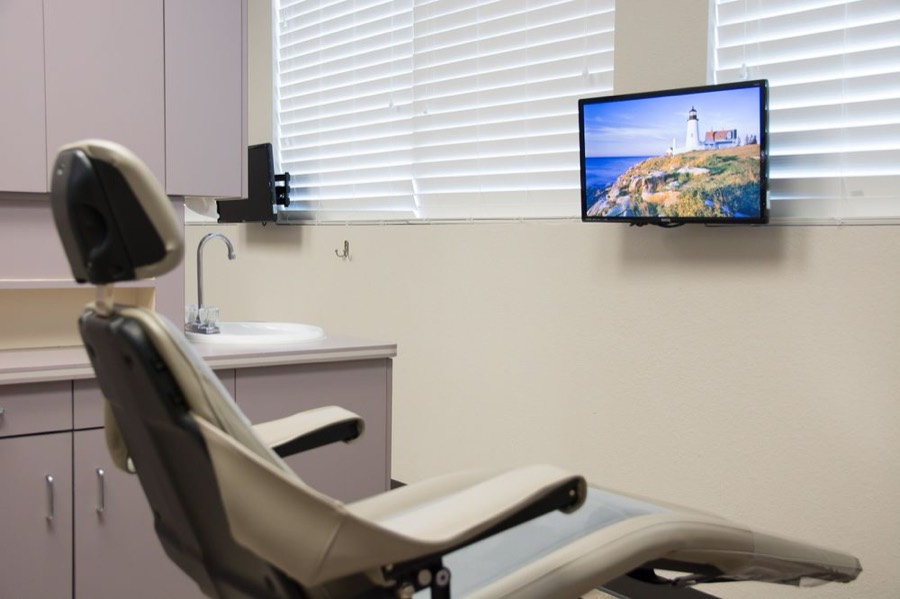
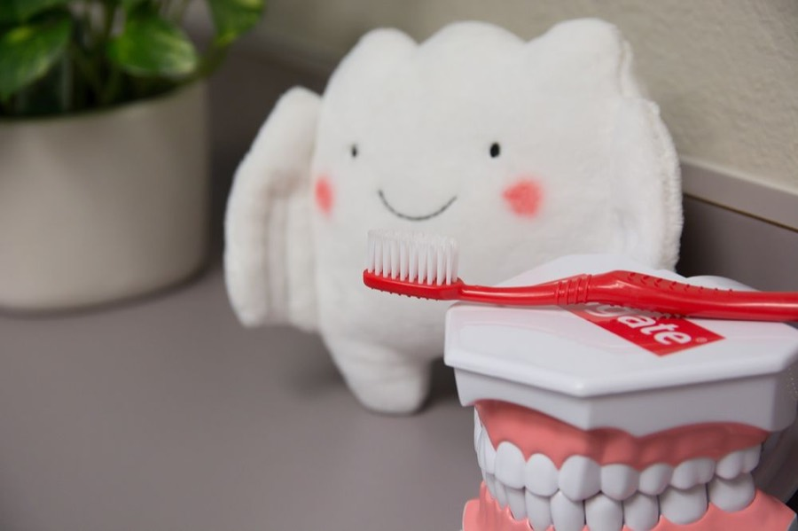

Family dentistry
Kids are seen from age 5. The first visit is mostly “counting teeth,” and there's a toy treasure chest and movies.
Family dentist · San Jose, CA
General and family dentistry for adults and children with Dr. Justine Chen, DDS, at 2360 McKee Rd, Suite 2, in San Jose.
5.05 Google reviewsServing patients in San Jose for over 30 years

FamiliesAdults, and kids from age 5
InsuranceMost PPO plans
No insurance?Special pricing
LanguagesCantonese with Dr. Chan
Services
For adults and children. Patients don't want to be shuffled from one office to another, so most procedures are done right here.
Kids are seen from age 5. The first visit is mostly “counting teeth,” and there's a toy treasure chest and movies.
Cleanings every six months, with complimentary fluoride varnish for adults and kids at each one. Sealants and fluoride help protect children's teeth.
Gum pockets checked about every other cleaning, and deep scaling in the office when it's needed.
Porcelain crowns colored to match your teeth, and bridges to replace missing teeth.
To save a tooth when the nerve is affected. Most can be done in a two-hour appointment.
Simple extractions here. Wisdom teeth and more complex extractions are generally referred to an oral surgeon.
Crowns for dental implants.
Complete and partial dentures.
A comprehensive exam with a cleaning and x-rays, to set up a personalized care plan.
Dentists
The practice's original owner and dentist was Dr. Kim Chen. His daughter, Dr. Justine Chen, now practices here, with Dr. Darwin Chan, who has been part of the office since 1987. The office has been renovated with digital x-rays, interactive patient monitors, intra-oral cameras and wi-fi.
General & family dentist
Dr. Chen grew up in the San Jose area. She earned her bachelor's degree in biology at UCLA and graduated from the UCSF School of Dentistry. She considers it a privilege to treat her patients with the highest level of personalized dental care.
She is a member of the American Dental Association, the California Dental Association and the Santa Clara County Dental Society. Outside dentistry, she enjoys golfing and spending time with her husband and two boys.
General dentist · Wednesdays & Saturdays
Dr. Chan graduated from the University of the Pacific School of Dentistry, with an undergraduate degree in biophysics from UC Berkeley. He emigrated from Hong Kong when he was young, was raised on the San Francisco Peninsula, and is fluent in Cantonese. He has been part of the McKee office since 1987.



Insurance & payment
“We accept most PPO insurance plans. We also offer special pricing for our patients without insurance.”
Reviews
“Had a great first visit and cleaning with Dr. Chen. She’s incredibly sweet, kind, and patient, and I didn’t feel anything during the cleaning at all. … She did a full mouth scan, X-rays, and photos, explained everything clearly, and answered all my questions. I really appreciated her honesty. …”
arpita rai · Google review
“Dr. Chen is the most caring, sensitive and skilled dentist I have ever had! I do not like going to dentists, but her gentle care and kind manner makes visits pleasant and easy. …”
Esther S. · Yelp review
“Dr. Chen is very nice and professional to her patients. She will explain your problems and try to work out the solutions with you. I highly recommend her to everyone.”
J T · Google review
“Doctor Chan is the best! I wouldn't go anywhere else. He's gentle and patient and I'm a big baby at the dentist so that is huge for me. I send all my family to him. …”
Angelina T. · Yelp review
“I went in for a general checkup and the service was great! Very gentle and detailed. The equipment Dr. Chen uses is all very new and works well. … Dr. Chen made us feel very comfortable and welcomed.”
Josephine C., Milpitas CA · testimonial on the office's website
“Dr. Chen is most wonderful! I have been going to her ever since she started at this location, my experience has been absolutely amazing, she's attentive, gentle and kind! …”
Kimmy M. · Yelp review
Hours
Dr. Chan is at the McKee office on Wednesdays and Saturdays. To schedule, it's best to call during normal business hours.
Location
2360 McKee Rd, Suite 2
San Jose, CA 95116